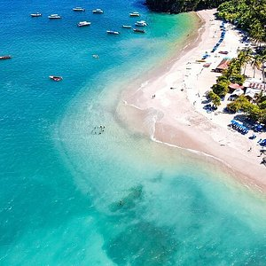
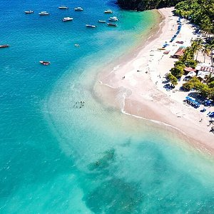
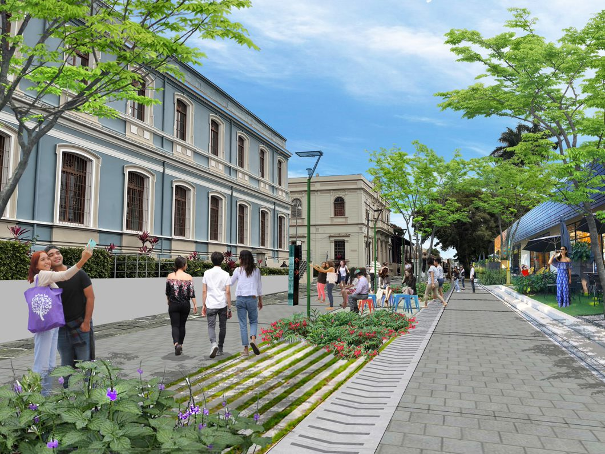

Moneda Nacional
El colón costarricense, llamado así en honor al almirante Cristóbal Colón, es la moneda oficial de la República de Costa Rica en América Central. Su símbolo es una letra C atravesada por dos barras inclinadas verticales "₡". Su código ISO 4217 es CRC
Capital de Costa Rica
San José, capital de Costa Rica, se ubica en la región del Valle Central con la Cordillera de Talamanca al sur y volcanes al norte. La ciudad se distingue por sus edificios coloniales españoles, como el decorado Teatro Nacional de Costa Rica
Poblacion de Costa Rica
Las perosnas de Costa Rica son comunmente conocidas como costarricense, costarriqueño (poco usado), tico (coloquial). Ademas la poblacion del pais es de 5.181 millones
Zona horaria
Costa Rica tiene una zona horaria , que se encuentra en la zona UTC−06:00, 6 horas detrás del Tiempo Universal Coordinado (UTC).
Bandera
La Bandera de Costa Rica fue creada el 29 de septiembre de 1848 junto con el Escudo Nacional. La tradición establece que la concepción y diseño de la actual bandera, vigente desde ese año, correspondió a Doña Pacífica Fernández Oreamuno, esposa del primer presidente de Costa Rica, José María Castro Madriz.
Divisiones Terriroriales a destacar
Guanacaste
Posee una superficie de 10,140 km². Es la segunda provincia más grande del país, pero también la más despoblada, en la cual habitan 404 774 personas. Está dividida en 11 cantones y 61 distritos
Historia
La anexión se dio mediante un plebiscito sucedido en la ciudad de Nicoya, en el cual, en cabildo abierto, los pobladores de los municipios de Nicoya y Santa Cruz votaron por incorporarse a Costa Rica, mientras que la villa de Guanacaste, hoy ciudad de Liberia, declinó la anexión, no obstante, el 18 de marzo de 1829

Atracciones Turisticas
- Hacienda Guachipelin
- Playa Hermosa
- Cavernas de Barra Honda
Puntarenas
Puntarenas posee una superficie de 11,266.79 km². Es la provincia más extensa de Costa Rica, con una población aproximada de 410,929 personas. Está dividida en 11 cantones y 63 distritos. Puntarenas se caracteriza por su diversidad natural, que incluye playas, montañas y selvas tropicales, siendo un destino clave tanto para el turismo local como internacional
 

Atracciones turisticas
- Parque Nacional Manuel Antonio
- Isla del Coco
- Parque Nacional Marino Ballena
Heredia
Heredia posee una superficie de 2,656 km². Es una de las provincias más pequeñas de Costa Rica, pero cuenta con una población de aproximadamente 506,000 personas. Está dividida en 10 cantones y 47 distritos. Heredia es conocida como "La Ciudad de las Flores" debido a su agradable clima y hermosos paisajes, que incluyen montañas, bosques y áreas de cultivo de café. Es una provincia rica en historia y cultura, con un importante legado colonial y educativo
Atracciones turisticas
- Parque Nacional Braulio Carrillo
- Volcán Barva
- Zarcero y su Parque Francisco Alvarado